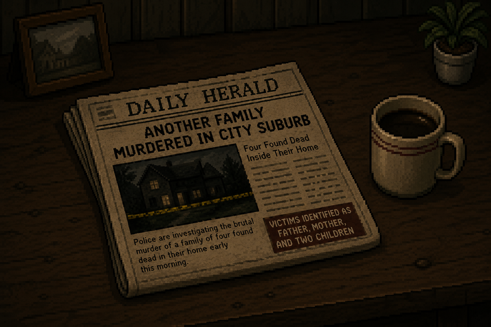

As soon as the investigation began, fear slowly consumed your mind. The silence of the house and the overwhelming sense that something was terribly wrong shattered your confidence, until you finally abandoned the case before uncovering the truth. The investigation was handed to another detective, while your name remained only as the detective who walked away from the mission.
Are you sure you want to go back to menu?